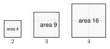
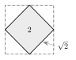

1. Find 92 and 132.
92 = 81 and 132 = 169
2. Write 36 as a product of prime numbers.
36 = 2 · 2 · 3 · 3
3. Solve 4x − 7 = 21.
4x = 28, so x = 7

Here are the perfect squares you should know. Learn them. You will see them all unit long.
| n | 1 | 2 | 3 | 4 | 5 | 6 | 7 | 8 | 9 | 10 | 11 | 12 | 13 | 14 | 15 |
|---|---|---|---|---|---|---|---|---|---|---|---|---|---|---|---|
| n2 | 1 | 4 | 9 | 16 | 25 | 36 | 49 | 64 | 81 | 100 | 121 | 144 | 169 | 196 | 225 |
49 = 7. We do not write −7. Both 7 · 7 and (−7) · (−7) equal 49, but the radical sign asks for the positive root only.
a. 64. Think: what number times itself is 64? 8 · 8 = 64, so 64 = 8.
b. 144 = 12, because 12 · 12 = 144.
c. A square tile has area 81 square inches. Its side length is 81 = 9 inches.
a. 121
121 = 11
b. 225
225 = 15
Most numbers are not perfect squares. Look at this tilted square on a grid. Its corners sit on the grid points. Cut off the four small triangles and the area is 2 square units. So the side length is 2. No whole number times itself gives 2.

72 = 49 and 82 = 64. So 50 is between 7 and 8.
Test the middle: 7.52 = 56.25. Since 50 < 56.25, 50 is closer to 7.
Calculator: 50 ≈ 7.071. To the nearest tenth, 50 ≈ 7.1.
62 = 36 and 72 = 49, so 45 is between 6 and 7. Since 6.52 = 42.25 and 45 > 42.25, it is closer to 7. Calculator: 45 ≈ 6.7.
40 is not 40 ÷ 2. Square roots are much smaller than the number. 62 = 36 and 72 = 49, so 40 is a little more than 6.
Method 1: perfect square factor. 72 = 36 · 2.
72 = 36 · 2 = 62
Method 2: prime factors. 72 = 2 · 2 · 2 · 3 · 3. Circle the pairs: (2 · 2) and (3 · 3). One 2 is left over.
72 = 2 · 3 · 2 = 62
a. 48. The largest perfect square factor is 16. 48 = 16 · 3 = 43.
b. 180. Prime factors: 180 = 2 · 2 · 3 · 3 · 5. The pairs give 2 · 3 = 6, and 5 is left over. So 180 = 65.
c. 30. The factors of 30 are 1, 2, 3, 5, 6, 10, 15, 30. None of them is a perfect square except 1. So 30 is already simplified.
a. 98
98 = 49 · 2 = 72
b. 150
150 = 25 · 6 = 56
The side of the garden is 50 = 52 feet. That is about 5 · 1.414 = 7.07 feet, which agrees with the estimate between 7 and 8.
A number in front of a radical means multiply. 52 is 5 · 2. To simplify 38, first simplify 8 = 22. Then multiply: 3 · 22 = 62.
Numbers in front: 2 · 5 = 10. Radicands: 3 · 6 = 18.
18 = 9 · 2 = 32.
23 · 56 = 10 · 32 = 302
The radicands differ, so simplify first. 8 = 22 and 18 = 32.
Now they are like radicals: 22 + 32 = 52.
62 · 22 = 622 = 32
We multiplied by 22, which equals 1, so the value did not change.
a. 2 · 14
28 = 27
b. 45 + 25
65
c. 93
933 = 33
Jamal writes 9 + 16 = 9 + 16 = 3 + 4 = 7.
Find his mistake. First add: 9 + 16 = 25, and 25 = 5. The rule a · b = a · b works for multiplying. It does not work for adding. 9+16 is not 9 + 16.
1. The number 49 is a perfect square and 49 = 7. The root is the positive root.
2. A radical is simplified when the radicand has no perfect square factor except 1.
3. We can add 3 + 43 because they are like radicals.
4. To remove a radical from a denominator we rationalize it.
5. 9 + 16 ≠ 9 + 16, because 25 = 5 and 3 + 4 = 7.
1. 25
5
2. 100
10
3. 169
13
4. 196
14
5. 4964
78
6. 400
20
7. A square patio has area 400 square feet. Mohammed wants to walk along one side. How long is one side?
400 = 20 feet
8. A square has area 169 square centimeters. Find its perimeter.
Side = 169 = 13 cm. Perimeter = 4 · 13 = 52 cm
9. Solve x2 = 81. How many answers does the equation have? Which one could be a side length?
x = 9 or x = −9. Only 9 can be a length.
10. 20
4 < 20 < 5; 20 ≈ 4.5
11. 70
8 < 70 < 9; ≈ 8.4
12. 115
10 < 115 < 11; ≈ 10.7
13. 3
1 < 3 < 2; ≈ 1.7
14. A square sign has area 30 square feet. Find the length of one side.
30 ≈ 5.5 feet
15. Fatima says 40 is about 20 because 40 ÷ 2 = 20. Use perfect squares to show why she is wrong.
62 = 36 and 72 = 49, so 40 is between 6 and 7 (about 6.3).
16. 8
22
17. 12
23
18. 18
32
19. 20
25
20. 27
33
21. 32
42
22. 54
36
23. 63
37
24. 80
45
25. 312
3 · 23 = 63
26. 300 (use prime factors)
300 = 2 · 2 · 3 · 5 · 5, so 300 = 2 · 5 3 = 103
27. 125
55
28. 5 · 20
100 = 10
29. 6 · 8
48 = 43
30. 32 · 410
1220 = 245
31. 27 + 67
87
32. 12 + 27
23 + 33 = 53
33. 58 − 2
102 − 2 = 92
34. 105
1055 = 25
35. 46
466 = 263
36. Kofi writes 18 + 2 = 20 = 25. What is wrong? What is the correct answer?
He added the radicands. Simplify first: 32 + 2 = 42.
37. A square garden has an area of 147 square feet. Lucía wants the exact length of one side of the garden. Which answer is correct?
A. 73 feet ← correct
B. 37 feet
C. 217 feet
D. 73.5 feet
38. Which expression is the product 35 · 210 written in simplest form?
A. 615
B. 302 ← correct
C. 650
D. 305
39. Show that 8 + 18 = 50.
22 + 32 = 52 and 50 = 52. They are equal.
40. One square has area 72 and another has area 18. How many times as long is the side of the larger square?
Sides: 62 and 32. The larger side is 2 times as long.